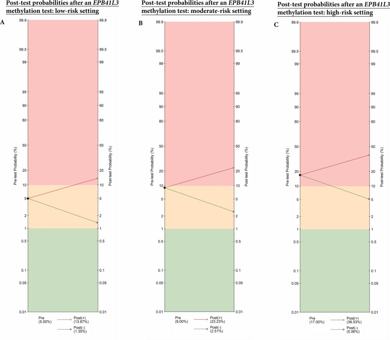
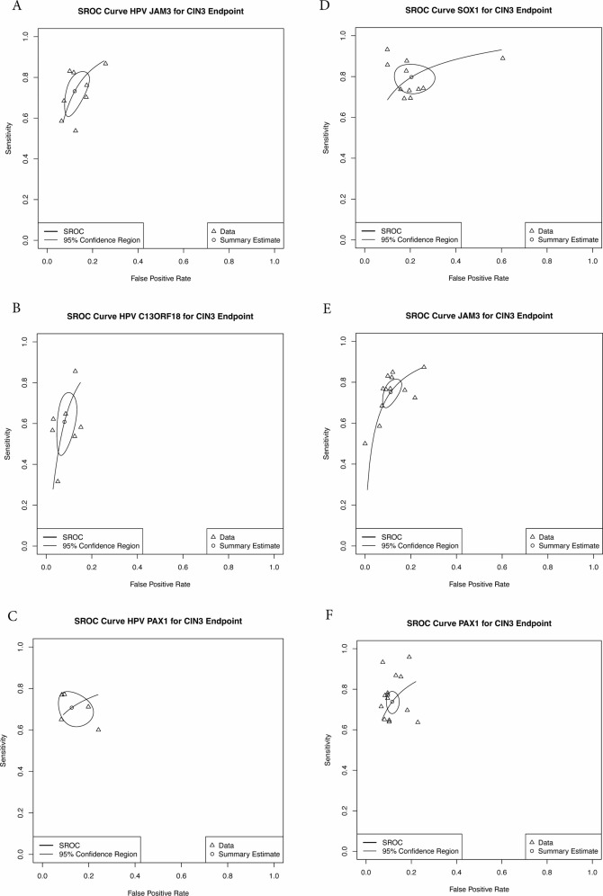

1Background & Objective
- Problem: cytology triage has modest sensitivity (53–75%) and inter-observer variability; many countries now use hrHPV primary screening, needing reliable triage.
- Methylation: measurable epigenetic change correlated with malignant transformation; many markers proposed but rarely head-to-head compared.
- Objective: collate all published human/viral DNA methylation tests for CIN3+/ICC and estimate pooled diagnostic accuracy in hrHPV+ women.
2Methods & Evidence Base
2,097
records screened
125
studies included
49,242
women
2,097 screened→
784 full-text→
125 included
13
markers · primary
32
markers · all women
GRADE
certainty
| Pre-test risk | Post-test (−) EPB41L3 | 10/13 markers |
|---|---|---|
| Low · 5% | 1.35% | <2% |
| Moderate · 9% | 2.51% | <2% |
| High · 17% | ≈5% | <3% |
- Search: MEDLINE, Embase, CENTRAL to 31 Mar 2025; PROSPERO CRD42022299760; PRISMA-DTA.
- Analysis: bivariate random-effects meta-analysis per marker; HSROC; QUADAS-2 risk of bias; GRADE.
- Primary endpoint: CIN3+ in hrHPV+ women; secondary CIN2+/ICC; each marker analysed separately.
- Pre/post-test: low (5%) / moderate (9%) / high (17%) risk settings; referral threshold ≥10% post-test probability.
3Top Markers — CIN3+ in hrHPV+ Women
| Marker | DOR | Se % | Sp % | NLR |
|---|---|---|---|---|
| JAM3 | 20.82 | 74 | 88 | 0.30 |
| C13ORF18 | 19.50 | 61 | 93 | 0.42 |
| PAX1 | 17.13 | 71 | 87 | 0.33 |
| S5 classifier | 4.46 | 84 | 47 | 0.34 |
Highest sensitivity: S5 (84%); highest specificity: C13ORF18 (93%); lowest NLR: EPB41L3 0.26.
4Results — Post-Test Probability & Forest

Fig. Negative post-test probability — EPB41L3 1.35% in low-risk setting; 10/13 markers <2%.

Fig. Marker-level forest plots of pooled accuracy (per marker meta-analysis).
- Rule-out power: all 13/13 markers reach ≤3% negative post-test probability; none reach <1%.
- Certainty: JAM3/C13ORF18/PAX1 best by DOR — consistent with CISCER® dual-gene test.